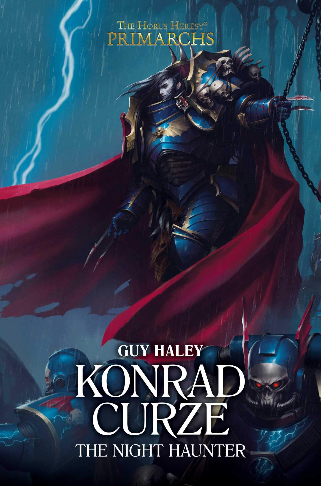

KONRAD CURZE: THE NIGHT HAUNTER

Author: Guy Haley
Format: Novel
From his childhood on Nostramo to his command of the Night Lords, Konrad Curze becomes the feared Night Haunter. This novel follows the making of a primarch whose visions of the future haunt his choices.
Introduction reviewed against Black Library’s description on 2026-09-27. The publisher page may contain spoilers.
Publication facts: publisher source, checked 2026-09-26.
Open this work in the interactive Archive to track reading progress and explore related works.